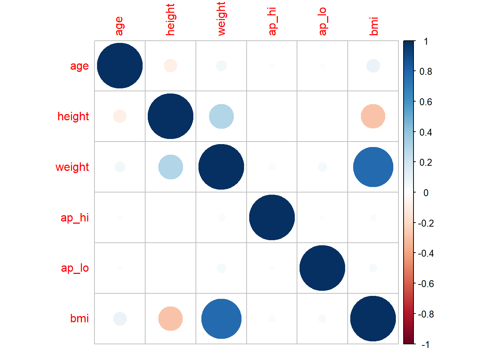

Final Report
Classification Model for Diabetes Risk
The Diabetes Risk Dataset contains 70,000 rows and 14 columns. The columns included a unique member ID (member_ID) number, age, height, weight, gender, systolic blood pressure (ap_hi), diastolic blood pressure (ap_lo), cholesterol, glucose (gluc), smoking (smoke), alcohol intake (alco), physical activity (active), body mass index (bmi) and at high risk of diabetes or not (diabetes). 6 of the potential predictor variables are categorical gender, cholesterol, glucose, smoke, alco and active, (along with the categorical response variable).
Data Cleaning/Preprocessing
Upon visual inspection of the data, the first issue seemed to be the presence of missing values in the cholesterol column. After loading in the data variables were adjusted to their type of variable mentioned in the data dictionary. To allow for easier intepretation of the predictors in the case of day, height and gender the variables were adjusted to non-metric variables. Age is changed from days to year, height is changed from cm to inches and weight is changed from kilograms to pounds.
#Data Preparation
diabetes_risk <- fread("data/diabetes_risk_data.csv") %>% rename(member_id = 1) %>% mutate(gender = recode(
gender,
"Male" = 0,
"Female" = 1), gluc = na_if(gluc, 0)) %>% mutate(diabetes = as.factor(diabetes), gender = as.factor(gender), cholesterol = as.factor(cholesterol), gluc = as.factor(gluc), smoke = as.factor(smoke), active = as.factor(active), alco = as.factor(alco), age = as.integer(age/365), height = height/2.54, weight = weight*2.20462)Summary Statistics and Visualizations
knitr::kable(summary(diabetes_risk[,-1]))| age | gender | height | weight | ap_hi | ap_lo | cholesterol | gluc | smoke | alco | active | diabetes | bmi | |
|---|---|---|---|---|---|---|---|---|---|---|---|---|---|
| Min. :29.00 | 0:45530 | Min. :21.65 | Min. : 22.05 | Min. : -150.0 | Min. : -70.00 | 1 :47095 | 1 :59475 | 0:63831 | 0:66236 | 0:13739 | 0:35021 | Min. : 3.472 | |
| 1st Qu.:48.00 | 1:24470 | 1st Qu.:62.60 | 1st Qu.:143.30 | 1st Qu.: 120.0 | 1st Qu.: 80.00 | 2 : 8632 | 2 : 5190 | 1: 6169 | 1: 3764 | 1:56261 | 1:34979 | 1st Qu.: 23.875 | |
| Median :53.00 | NA | Median :64.96 | Median :158.73 | Median : 120.0 | Median : 80.00 | 3 : 7273 | 3 : 5330 | NA | NA | NA | NA | Median : 26.374 | |
| Mean :52.84 | NA | Mean :64.71 | Mean :163.60 | Mean : 128.8 | Mean : 96.63 | NA’s: 7000 | NA’s: 5 | NA | NA | NA | NA | Mean : 27.557 | |
| 3rd Qu.:58.00 | NA | 3rd Qu.:66.93 | 3rd Qu.:180.78 | 3rd Qu.: 140.0 | 3rd Qu.: 90.00 | NA | NA | NA | NA | NA | NA | 3rd Qu.: 30.222 | |
| Max. :64.00 | NA | Max. :98.43 | Max. :440.92 | Max. :16020.0 | Max. :11000.00 | NA | NA | NA | NA | NA | NA | Max. :298.667 |
Upon viewing additional summary statistics I noticed two more problems that were some missing values in the gluc variable and there were certain values coded with a 0. To combat the 0 values as it was not listed as a factor in the data dictionary, I recoded the 0 values form the gluc column to missing values. Then to fix the issue of missing values, I used the mice package to impute values with plausible data values drawn from distributions. This method was used as there were over 7000 missing values which is a large amount.
knitr::kable(summary(imputed[,-1]))| age | gender | height | weight | ap_hi | ap_lo | cholesterol | gluc | smoke | alco | active | diabetes | bmi | |
|---|---|---|---|---|---|---|---|---|---|---|---|---|---|
| Min. :29.00 | 0:45530 | Min. :21.65 | Min. : 22.05 | Min. : -150.0 | Min. : -70.00 | 1:52353 | 1:59478 | 0:63831 | 0:66236 | 0:13739 | 0:35021 | Min. : 3.472 | |
| 1st Qu.:48.00 | 1:24470 | 1st Qu.:62.60 | 1st Qu.:143.30 | 1st Qu.: 120.0 | 1st Qu.: 80.00 | 2: 9607 | 2: 5191 | 1: 6169 | 1: 3764 | 1:56261 | 1:34979 | 1st Qu.: 23.875 | |
| Median :53.00 | NA | Median :64.96 | Median :158.73 | Median : 120.0 | Median : 80.00 | 3: 8040 | 3: 5331 | NA | NA | NA | NA | Median : 26.374 | |
| Mean :52.84 | NA | Mean :64.71 | Mean :163.60 | Mean : 128.8 | Mean : 96.63 | NA | NA | NA | NA | NA | NA | Mean : 27.557 | |
| 3rd Qu.:58.00 | NA | 3rd Qu.:66.93 | 3rd Qu.:180.78 | 3rd Qu.: 140.0 | 3rd Qu.: 90.00 | NA | NA | NA | NA | NA | NA | 3rd Qu.: 30.222 | |
| Max. :64.00 | NA | Max. :98.43 | Max. :440.92 | Max. :16020.0 | Max. :11000.00 | NA | NA | NA | NA | NA | NA | Max. :298.667 |
From the summary statistics of the imputed dataset, there are no longer any missing values.
#Data Partition
indexTrain <- createDataPartition(y = imputed$diabetes, p = 0.8, list = FALSE)
trainData <- imputed[indexTrain, ]
testData <- imputed[-indexTrain, ]
#for model training (remove id variable)
trainData <- trainData[,-1]
testData <- testData[-1]
#checking for outliers
cooksd <- cooks.distance(glm(diabetes ~ .,
family = "binomial",
data = trainData))## Warning: glm.fit: fitted probabilities numerically 0 or 1 occurredplot(cooksd,
pch="*",
cex=2,
main="Influential Obs by Cooks distance")
abline(h = 4*mean(cooksd, na.rm=T), col="red")
outliers <- as.data.frame(rownames(trainData[cooksd > 4*mean(cooksd, na.rm=T), ]))
nrow(outliers)## [1] 37#Checking for multicolinearity (#bmi and weight are correlated)
corrplot(cor(trainData[,c(1,3:6,13)]), method = "circle", type = "full")
Lastly the data set was checked for outliers, as there were only found to be 37 outliers, it was not a significant number to be removed for analysis. In terms of checking for multicolineary, bmi and weight were highly positively correlated (0.8). Due to this reason I decided to remove the bmi variable from the predictor susbset (after testing models and seeing improvements in performance metrics with a smaller subset).
Final Model Choice
The classification model chosen that can accurately classify individuals as being risk for diabetes or not was a tested Gradient Boost Machines method. This machine learning method had the largest accuracy and AOC value.
GBM: Gradient boosting trains models in a gradual, additive and sequential manner (in terms of decision trees: each tree is grown using information from previously grown trees). In boosting, we only use the original data, and do not draw any random samples. The trees are grown successively, using a “slow” learning approach: each new tree is fit to the signal that is left over from the earlier trees, and shrunken down before it is used.
Model Performance
| Metrics | Logistic Regression | Gradient Boosting | Random Forest | Naive Bayes | Decision Tree |
|---|---|---|---|---|---|
| MSE | 0.2179 | 0.1764 | 0.1945 | 0.2725 | 0.2381 |
| RMSE | 0.4668 | 0.4199 | 0.4409 | 0.5221 | 0.4879 |
| AUC | 0.7115 | 0.8116 | 0.7858 | 0.6952 | 0.7822 |
| Accuracy | 0.6069 | 0.7271 | 0.7068 | 0.6194 | 0.7104 |
Key Factors for Model Predictions
Advantages: * Generally more accurate compare to other modes, * Train faster especially on larger datasets, * Most of them provide support handling categorical features, * Some of them handle missing values natively. * Gradient boosting trees can be more accurate than random forests. Because we train them to correct each other’s errors, they’re capable of capturing complex patterns in the data.
Limitations of Model
Disadvantages: * Prone to overfitting: this can be solved by applying L1 and L2 regularization penalties. You can try a low learning rate as well; * Models can be computationally expensive and take a long time to train, especially on CPUs; * Difficult to interpret the final models. * It is difficult to scale this algorithm as every estimator is dependent on its predecessor.